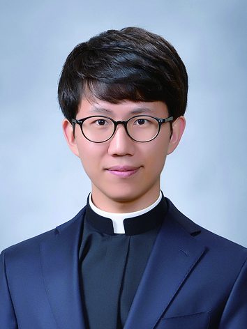

소개 및 인사말
찬미예수님! 학교사목부는 서울 시내 초중고등학교에서 다양한 방법으로 학교복음화를 위해 활동 하고 있습니다.
저희 부서는 청소년들의 삶의 자리인 학교 안에서 예수님의 사랑과 복음을 전하여, 청소년들이 이 세상의 빛과 소금의 역할을 할 수 있도록 인도하며 학교 복음화를 위해 활동합니다.
청소년들이 학교 안에서 예수 그리스도를 닮은 ‘참 인간’으로 성장 할 수 있도록 많은 관심 부탁드립니다.

홍성원 미카엘 신부님
- 축일 : 9월 29일
- 담당 : CA, CCE
- 서품일 : 2015년 2월 6일
| 구분 | 이름 | 업무 | 자리번호 |
|---|---|---|---|
| CA | 이수미 율리안나 | 교재연구, 봉사자교육 및 관리 | 02-553-7321 |
| 이율리아 율리아(육아휴직) | 교재연구, 봉사자교육 및 관리 | 070-4367-5937 | |
| 김혜안 크리스티나 | 교재연구, 봉사자교육 및 관리 | 02-553-7320 | |
| 고나연 베로니카 | 교재연구, 봉사자교육 및 관리, 초등교육자회 담당 | 02-553-7322 | |
| 손재현 마리아 | 교재연구, 봉사자교육 및 관리 | 070-4367-5937 | |
| 김병옥 F.하비에르 | 회계, 중등교육자회 담당, 회관 관리 | 02-556-5456 | |
| CELL | 최유미 스텔라 | 교육연구, 가톨릭학생회 관리 | 02-742-4151 |
| 이은지 유스티나 | 교육연구, 가톨릭학생회 관리 | 02-742-4151 |